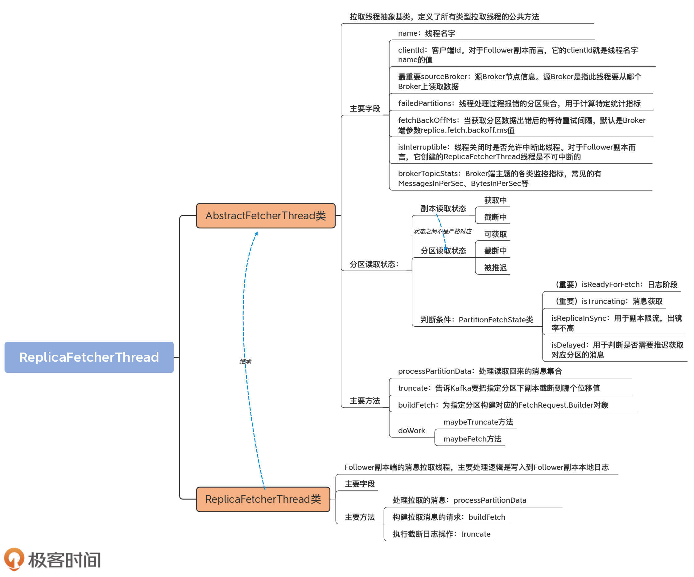

- 00 导读 构建Kafka工程和源码阅读环境、Scala语言热身.md.html
- 00 开篇词 阅读源码，逐渐成了职业进阶道路上的“必选项”.md.html
- 00 重磅加餐 带你快速入门Scala语言.md.html
- 01 日志段：保存消息文件的对象是怎么实现的？.md.html
- 02 日志（上）：日志究竟是如何加载日志段的？.md.html
- 03 日志（下）：彻底搞懂Log对象的常见操作.md.html
- 04 索引（上）：改进的二分查找算法在Kafka索引的应用.md.html
- 05 索引（下）：位移索引和时间戳索引的区别是什么？.md.html
- 06 请求通道：如何实现Kafka请求队列？.md.html
- 07 SocketServer（上）：Kafka到底是怎么应用NIO实现网络通信的？.md.html
- 08 SocketServer（中）：请求还要区分优先级？.md.html
- 09 SocketServer（下）：请求处理全流程源码分析.md.html
- 10 KafkaApis：Kafka最重要的源码入口，没有之一.md.html
- 11 Controller元数据：Controller都保存有哪些东西？有几种状态？.md.html
- 12 ControllerChannelManager：Controller如何管理请求发送？.md.html
- 13 ControllerEventManager：变身单线程后的Controller如何处理事件？.md.html
- 14 Controller选举是怎么实现的？.md.html
- 15 如何理解Controller在Kafka集群中的作用？.md.html
- 16 TopicDeletionManager： Topic是怎么被删除的？.md.html
- 17 ReplicaStateMachine：揭秘副本状态机实现原理.md.html
- 18 PartitionStateMachine：分区状态转换如何实现？.md.html
- 19 TimingWheel：探究Kafka定时器背后的高效时间轮算法.md.html
- 20 DelayedOperation：Broker是怎么延时处理请求的？.md.html
- 21 AbstractFetcherThread：拉取消息分几步？.md.html
- 22 ReplicaFetcherThread：Follower如何拉取Leader消息？.md.html
- 23 ReplicaManager（上）：必须要掌握的副本管理类定义和核心字段.md.html
- 24 ReplicaManager（中）：副本管理器是如何读写副本的？.md.html
- 25 ReplicaManager（下）：副本管理器是如何管理副本的？.md.html
- 26 MetadataCache：Broker是怎么异步更新元数据缓存的？.md.html
- 27 消费者组元数据（上）：消费者组都有哪些元数据？.md.html
- 28 消费者组元数据（下）：Kafka如何管理这些元数据？.md.html
- 29 GroupMetadataManager：组元数据管理器是个什么东西？.md.html
- 30 GroupMetadataManager：位移主题保存的只是位移吗？.md.html
- 31 GroupMetadataManager：查询位移时，不用读取位移主题？.md.html
- 32 GroupCoordinator：在Rebalance中，Coordinator如何处理成员入组？.md.html
- 33 GroupCoordinator：在Rebalance中，如何进行组同步？.md.html
- 特别放送（一）经典的Kafka学习资料有哪些？.md.html
- 特别放送（三）我是怎么度过日常一天的？.md.html
- 特别放送（二）一篇文章带你了解参与开源社区的全部流程.md.html
- 特别放送（五） Kafka 社区的重磅功能：移除 ZooKeeper 依赖.md.html
- 特别放送（四）20道经典的Kafka面试题详解.md.html
- 结束语 源码学习，我们才刚上路呢.md.html
- 捐赠
21 AbstractFetcherThread：拉取消息分几步？
你好，我是胡夕。从今天开始，我们正式进入到第5大模块“副本管理模块”源码的学习。
在Kafka中，副本是最重要的概念之一。为什么这么说呢？在前面的课程中，我曾反复提到过副本机制是Kafka实现数据高可靠性的基础。具体的实现方式就是，同一个分区下的多个副本分散在不同的Broker机器上，它们保存相同的消息数据以实现高可靠性。对于分布式系统而言，一个必须要解决的问题，就是如何确保所有副本上的数据是一致的。
针对这个问题，最常见的方案当属Leader/Follower备份机制（Leader/Follower Replication）。在Kafka中， 分区的某个副本会被指定为Leader，负责响应客户端的读写请求。其他副本自动成为Follower，被动地同步Leader副本中的数据。
这里所说的被动同步，是指Follower副本不断地向Leader副本发送读取请求，以获取Leader处写入的最新消息数据。
那么在接下来的两讲，我们就一起学习下Follower副本是如何通过拉取线程做到这一点的。另外，Follower副本在副本同步的过程中，还可能发生名为截断（Truncation）的操作。我们一并来看下它的实现原理。
课前案例
坦率地说，这部分源码非常贴近底层设计架构原理。你可能在想：阅读它对我实际有什么帮助吗？我举一个实际的例子来说明下。
我们曾经在生产环境中发现，一旦Broker上的副本数过多，Broker节点的内存占用就会非常高。查过HeapDump之后，我们发现根源在于ReplicaFetcherThread文件中的buildFetch方法。这个方法里有这样一句：
val builder = fetchSessionHandler.newBuilder()
这条语句底层会实例化一个LinkedHashMap。如果分区数很多的话，这个Map会被扩容很多次，因此带来了很多不必要的数据拷贝。这样既增加了内存的Footprint，也浪费了CPU资源。
你看，通过查询源码，我们定位到了这个问题的根本原因。后来，我们通过将负载转移到其他Broker的方法解决了这个问题。
其实，Kafka社区也发现了这个Bug，所以当你现在再看这部分源码的时候，就会发现这行语句已经被修正了。它现在长这个样子，你可以体会下和之前有什么不同：
val builder = fetchSessionHandler.newBuilder(partitionMap.size, false)
你可能也看出来了，修改前后最大的不同，其实在于修改后的这条语句直接传入了FETCH请求中总的分区数，并直接将其传给LinkedHashMap，免得再执行扩容操作了。
你看，有的时候改进一行源码就能解决实际问题。而且，你千万不要以为修改源码是一件多么神秘的事情，搞懂了原理之后，就可以有针对性地调整代码了，这其实是一件非常愉悦的事情。
好了，我们说回Follower副本从Leader副本拉取数据这件事儿。不知道你有没有注意到，我在前面的例子提到了一个名字：ReplicaFetcherThread，也就是副本获取线程。没错，Kafka源码就是通过这个线程实现的消息拉取及处理。
今天这节课，我们先从抽象基类AbstractFetcherThread学起，看看它的类定义和三个重要方法。下节课，我们再继续学习AbstractFetcherThread类的一个重要方法，以及子类ReplicaFetcherThread的源码。这样，我们就能彻底搞明白Follower端同步Leader端消息的原理。
抽象基类：AbstractFetcherThread
等等，我们不是要学ReplicaFetcherThread吗？为什么要先从它的父类AbstractFetcherThread开始学习呢？
其实，这里的原因也很简单，那就是因为AbstractFetcherThread类是ReplicaFetcherThread的抽象基类。它里面定义和实现了很多重要的字段和方法，是我们学习ReplicaFetcherThread源码的基础。同时，AbstractFetcherThread类的源码给出了很多子类需要实现的方法。
因此，我们需要事先了解这个抽象基类，否则便无法顺畅过渡到其子类源码的学习。
好了，我们来正式认识下AbstractFetcherThread吧。它的源码位于server包下的AbstractFetcherThread.scala文件中。从名字来看，它是一个抽象类，实现的功能是从Broker获取多个分区的消息数据，至于获取之后如何对这些数据进行处理，则交由子类来实现。
类定义及字段
我们看下AbstractFetcherThread类的定义和一些重要的字段：
abstract class AbstractFetcherThread(
name: String, // 线程名称
clientId: String, // Client Id，用于日志输出
val sourceBroker: BrokerEndPoint, // 数据源Broker地址
failedPartitions: FailedPartitions, // 处理过程中出现失败的分区
fetchBackOffMs: Int = 0, // 获取操作重试间隔
isInterruptible: Boolean = true, // 线程是否允许被中断
val brokerTopicStats: BrokerTopicStats) // Broker端主题监控指标
extends ShutdownableThread(name, isInterruptible) {
// 定义FetchData类型表示获取的消息数据
type FetchData = FetchResponse.PartitionData[Records]
// 定义EpochData类型表示Leader Epoch数据
type EpochData = OffsetsForLeaderEpochRequest.PartitionData
private val partitionStates = new PartitionStates[PartitionFetchState]
......
}
我们来看一下AbstractFetcherThread的构造函数接收的几个重要参数的含义。
- name：线程名字。
- sourceBroker：源Broker节点信息。源Broker是指此线程要从哪个Broker上读取数据。
- failedPartitions：线程处理过程报错的分区集合。
- fetchBackOffMs：当获取分区数据出错后的等待重试间隔，默认是Broker端参数replica.fetch.backoff.ms值。
- brokerTopicStats：Broker端主题的各类监控指标，常见的有MessagesInPerSec、BytesInPerSec等。
这些字段中比较重要的是sourceBroker，因为它决定Follower副本从哪个Broker拉取数据，也就是Leader副本所在的Broker是哪台。
除了构造函数的这几个字段外，AbstractFetcherThread类还定义了两个type类型。用关键字type定义一个类型，属于Scala比较高阶的语法特性。从某种程度上，你可以把它当成一个快捷方式，比如FetchData这句：
type FetchData = FetchResponse.PartitionData[Records]
这行语句类似于一个快捷方式：以后凡是源码中需要用到FetchResponse.PartitionData[Records]的地方，都可以简单地使用FetchData替换掉，非常简洁方便。自定义类型EpochData，也是同样的用法。
FetchData定义里的PartitionData类型，是客户端clients工程中FetchResponse类定义的嵌套类。FetchResponse类封装的是FETCH请求的Response对象，而里面的PartitionData类是一个POJO类，保存的是Response中单个分区数据拉取的各项数据，包括从该分区的Leader副本拉取回来的消息、该分区的高水位值和日志起始位移值等。
我们看下它的代码：
public static final class PartitionData<T extends BaseRecords> {
public final Errors error; // 错误码
public final long highWatermark; // 高水位值
public final long lastStableOffset; // 最新LSO值
public final long logStartOffset; // 最新Log Start Offset值
// 期望的Read Replica
// KAFKA 2.4之后支持部分Follower副本可以对外提供读服务
public final Optional<Integer> preferredReadReplica;
// 该分区对应的已终止事务列表
public final List<AbortedTransaction> abortedTransactions;
// 消息集合，最重要的字段！
public final T records;
// 构造函数......
}
PartitionData这个类定义的字段中，除了我们已经非常熟悉的highWatermark和logStartOffset等字段外，还有一些属于比较高阶的用法：
- preferredReadReplica，用于指定可对外提供读服务的Follower副本；
- abortedTransactions，用于保存该分区当前已终止事务列表；
- lastStableOffset是最新的LSO值，属于Kafka事务的概念。
关于这几个字段，你只要了解它们的基本作用就可以了。实际上，在PartitionData这个类中，最需要你重点关注的是records字段。因为它保存实际的消息集合，而这是我们最关心的数据。
说到这里，如果你去查看EpochData的定义，能发现它也是PartitionData类型。但，你一定要注意的是，EpochData的PartitionData是OffsetsForLeaderEpochRequest的PartitionData类型。
事实上，在Kafka源码中，有很多名为PartitionData的嵌套类。很多请求类型中的数据都是按分区层级进行分组的，因此源码很自然地在这些请求类中创建了同名的嵌套类。我们在查看源码时，一定要注意区分PartitionData嵌套类是定义在哪类请求中的，不同类型请求中的PartitionData类字段是完全不同的。
分区读取状态类
好了，我们把视线拉回到AbstractFetcherThread类。在这个类的构造函数中，我们看到它还封装了一个名为PartitionStates[PartitionFetchState]类型的字段。
是不是看上去有些复杂？不过没关系，我们分开来看，先看它泛型的参数类型PartitionFetchState类。直观上理解，它是表征分区读取状态的，保存的是分区的已读取位移值和对应的副本状态。
注意这里的状态有两个，一个是分区读取状态，一个是副本读取状态。副本读取状态由ReplicaState接口表示，如下所示：
sealed trait ReplicaState
// 截断中
case object Truncating extends ReplicaState
// 获取中
case object Fetching extends ReplicaState
可见，副本读取状态有截断中和获取中两个：当副本执行截断操作时，副本状态被设置成Truncating；当副本被读取时，副本状态被设置成Fetching。
而分区读取状态有3个，分别是：
- 可获取，表明副本获取线程当前能够读取数据。
- 截断中，表明分区副本正在执行截断操作（比如该副本刚刚成为Follower副本）。
- 被推迟，表明副本获取线程获取数据时出现错误，需要等待一段时间后重试。
值得注意的是，分区读取状态中的可获取、截断中与副本读取状态的获取中、截断中两个状态并非严格对应的。换句话说，副本读取状态处于获取中，并不一定表示分区读取状态就是可获取状态。对于分区而言，它是否能够被获取的条件要比副本严格一些。
接下来，我们就来看看这3类分区获取状态的源码定义：
case class PartitionFetchState(fetchOffset: Long,
lag: Option[Long],
currentLeaderEpoch: Int,
delay: Option[DelayedItem],
state: ReplicaState) {
// 分区可获取的条件是副本处于Fetching且未被推迟执行
def isReadyForFetch: Boolean = state == Fetching && !isDelayed
// 副本处于ISR的条件：没有lag
def isReplicaInSync: Boolean = lag.isDefined && lag.get <= 0
// 分区处于截断中状态的条件：副本处于Truncating状态且未被推迟执行
def isTruncating: Boolean = state == Truncating && !isDelayed
// 分区被推迟获取数据的条件：存在未过期的延迟任务
def isDelayed: Boolean =
delay.exists(_.getDelay(TimeUnit.MILLISECONDS) > 0)
......
}
这段源码中有4个方法，你只要重点了解isReadyForFetch和isTruncating这两个方法即可。因为副本获取线程做的事情就是这两件：日志截断和消息获取。
至于isReplicaInSync，它被用于副本限流，出镜率不高。而isDelayed，是用于判断是否需要推迟获取对应分区的消息。源码会不断地调整那些不需要推迟的分区的读取顺序，以保证读取的公平性。
这个公平性，其实就是在partitionStates字段的类型PartitionStates类中实现的。这个类是在clients工程中定义的。它本质上会接收一组要读取的主题分区，然后以轮询的方式依次读取这些分区以确保公平性。
鉴于咱们这门儿课聚焦于Broker端源码，因此，这里我只是简单和你说下这个类的实现原理。如果你想要深入理解这部分内容，可以翻开clients端工程的源码，自行去探索下这部分的源码。
public class PartitionStates<S> {
private final LinkedHashMap<TopicPartition, S> map = new LinkedHashMap<>();
......
public void updateAndMoveToEnd(TopicPartition topicPartition, S state) {
map.remove(topicPartition);
map.put(topicPartition, state);
updateSize();
}
......
}
前面说过了，PartitionStates类用轮询的方式来处理要读取的多个分区。那具体是怎么实现的呢？简单来说，就是依靠LinkedHashMap数据结构来保存所有主题分区。LinkedHashMap中的元素有明确的迭代顺序，通常就是元素被插入的顺序。
假设Kafka要读取5个分区上的消息：A、B、C、D和E。如果插入顺序就是ABCDE，那么自然首先读取分区A。一旦A被读取之后，为了确保各个分区都有同等机会被读取到，代码需要将A插入到分区列表的最后一位，这就是updateAndMoveToEnd方法要做的事情。
具体来说，就是把A从map中移除掉，然后再插回去，这样A自然就处于列表的最后一位了。大体上，PartitionStates类就是做这个用的。
重要方法
说完了AbstractFetcherThread类的定义，我们再看下它提供的一些重要方法。
这个类总共封装了近40个方法，那接下来我就按照这些方法对于你使用Kafka、解决Kafka问题的重要程度，精选出4个方法做重点讲解，分别是processPartitionData、truncate、buildFetch和doWork。这4个方法涵盖了拉取线程所做的最重要的3件事儿：构建FETCH请求、执行截断操作、处理拉取后的结果。而doWork方法，其实是串联起了前面的这3个方法。
好了，我们一个一个来看看吧。
首先是它最重要的方法processPartitionData，用于处理读取回来的消息集合。它是一个抽象方法，因此需要子类实现它的逻辑。具体到Follower副本而言， 是由ReplicaFetcherThread类实现的。以下是它的方法签名：
protected def processPartitionData(
topicPartition: TopicPartition, // 读取哪个分区的数据
fetchOffset: Long, // 读取到的最新位移值
partitionData: FetchData // 读取到的分区消息数据
): Option[LogAppendInfo] // 写入已读取消息数据前的元数据
我们需要重点关注的字段是，该方法的返回值Option[LogAppendInfo]：
- 对于Follower副本读消息写入日志而言，你可以忽略这里的Option，因为它肯定会返回具体的LogAppendInfo实例，而不会是None。
- 至于LogAppendInfo类，我们在“日志模块”中已经介绍过了。它封装了很多消息数据被写入到日志前的重要元数据信息，比如首条消息的位移值、最后一条消息位移值、最大时间戳等。
除了processPartitionData方法，另一个重要的方法是truncate方法，其签名代码如下：
protected def truncate(
topicPartition: TopicPartition, // 要对哪个分区下副本执行截断操作
truncationState: OffsetTruncationState // Offset + 截断状态
): Unit
这里的OffsetTruncationState类封装了一个位移值和一个截断完成与否的布尔值状态。它的主要作用是，告诉Kafka要把指定分区下副本截断到哪个位移值。
第3个重要的方法是buildFetch方法。代码如下：
protected def buildFetch(
// 一组要读取的分区列表
// 分区是否可读取取决于PartitionFetchState中的状态
partitionMap: Map[TopicPartition, PartitionFetchState]):
// 封装FetchRequest.Builder对象
ResultWithPartitions[Option[ReplicaFetch]]
buildFetch方法的返回值看似很复杂，但其实如果你阅读源码的话，就会发现buildFetch的本质就是，为指定分区构建对应的FetchRequest.Builder对象，而该对象是构建FetchRequest的核心组件。Kafka中任何类型的消息读取，都是通过给指定Broker发送FetchRequest请求来完成的。
第4个重要的方法是doWork。虽然它的代码行数不多，但却是串联前面3个方法的主要入口方法，也是AbstractFetcherThread类的核心方法。因此，我们要多花点时间，弄明白这些方法是怎么组合在一起共同工作的。我会在下节课和你详细拆解这里面的代码原理。
总结
今天，我们主要学习了Kafka的副本同步机制和副本管理器组件。目前，Kafka副本之间的消息同步是依靠ReplicaFetcherThread线程完成的。我们重点阅读了它的抽象基类AbstractFetcherThread线程类的代码。作为拉取线程的公共基类，AbstractFetcherThread类定义了很多重要方法。
我们来回顾一下这节课的重点。
- AbstractFetcherThread类：拉取线程的抽象基类。它定义了公共方法来处理所有拉取线程都要实现的逻辑，如执行截断操作，获取消息等。
- 拉取线程逻辑：循环执行截断操作和获取数据操作。
- 分区读取状态：当前，源码定义了3类分区读取状态。拉取线程只能拉取处于可读取状态的分区的数据。

下节课，我会带你一起对照着doWork方法的代码，把拉取线程的完整执行逻辑串联一遍，这样的话，我们就能彻底掌握Follower副本拉取线程的工作原理了。在这个过程中，我们还会陆续接触到ReplicaFetcherThread类源码的3个重要方法的代码。你需要理解它们的实现机制以及doWork是怎么把它们组织在一起的。
课后讨论
请简单描述一下handlePartitionsWithErrors方法的实现原理。
欢迎在留言区写下你的思考和答案，跟我交流讨论，也欢迎你把今天的内容分享给你的朋友。
© 2019 - 2023 Liangliang Lee. Powered by gin and hexo-theme-book.